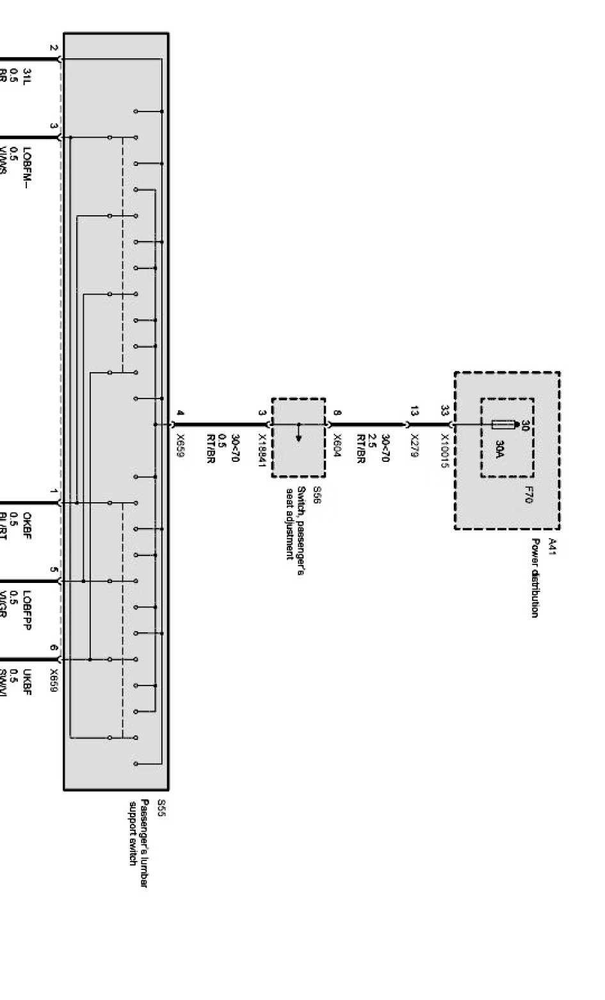
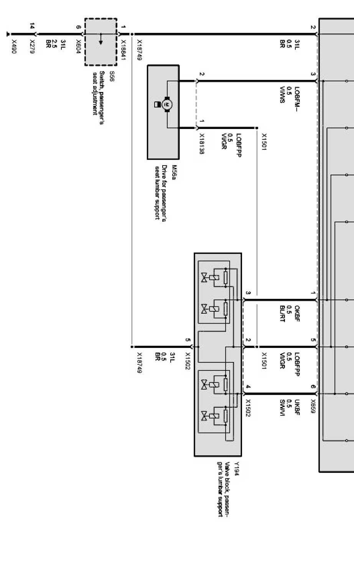

Operation CHARM
: Car repair manuals for everyone.
Home
>>
BMW
>>
2007
>>
X3 3.0si (E83) L6-3.0L (N52K)
>>
Repair and Diagnosis
>>
Diagrams
>>
Electrical Diagrams
>>
Body
>>
Seat and Mirror Functions
>>
Lumbar Support, Passenger Side (Without Z Series_Z4-E85/E86 With Lumbar Support)
>>
Passenger's Lumbar Support With Electric Seat Adjustment (SMF, Driver)
Passenger's Lumbar Support With Electric Seat Adjustment (SMF, Driver)
Passenger's lumbar support with electric seat adjustment Part 1:

Passenger's lumbar support with electric seat adjustment Part 2:
